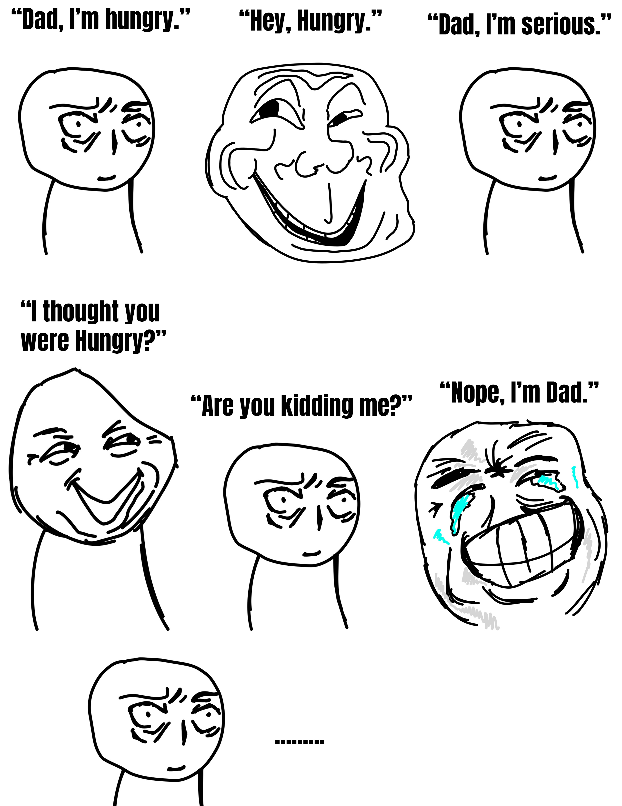
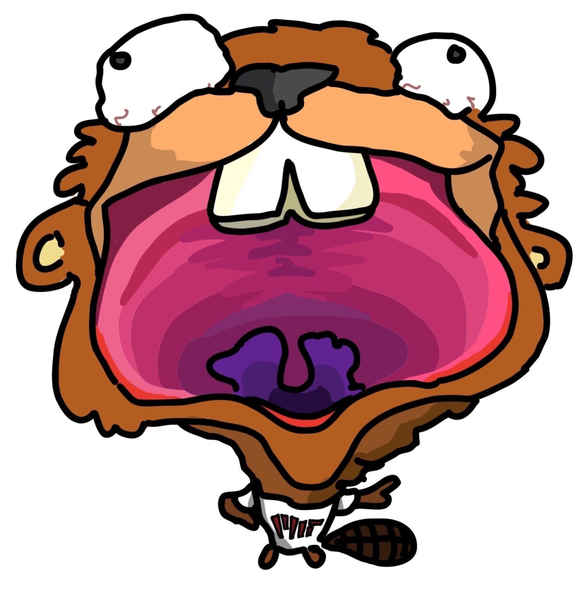
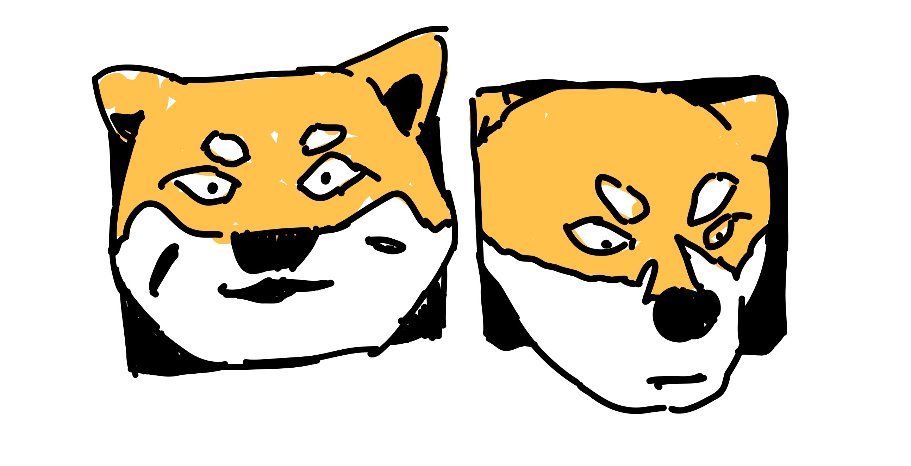
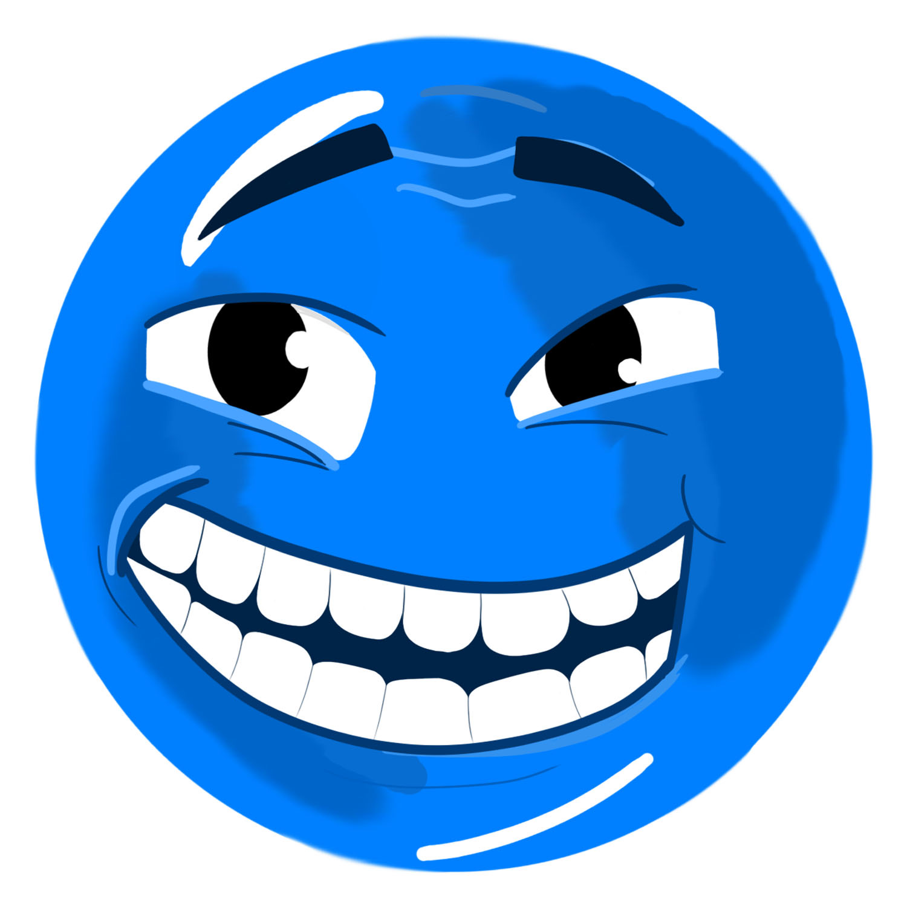

Changed Speech Patterns
December 31, 2025
by mouffins and bulgogi merchant
Objective: explain changed speech patterns but we troll each other simultaneously
This post is going to be quite different from usual, as you will see…
AAAAAAAAAAAAA
We have a GUEST WRITER! Each guest writer who comes on has an alias associated with them. Please introduce yourself!
Hello! I possess the moniker of Bulgogi Merchant. I sell many things, including beef, kimchi,
HI CHI I’M MOUFFINS!
...and fungi. We’ll explain how I got my wares in a bit.
Wait, I think it would be good to explain it now, since you formally selected your name— OH NO—
HI E I’M BULGOGI MERCHANT!
Hi erchant, I’m mouffins! Okay, this is already getting out of hand. I think we should explain it now.
Okay, are you going to explain it?
No, I’m mouffins.
...
...
Okay, anyway, there are multiple specific strings of letters that we cannot say. It’s like that dad joke:

Yep, it’s that simple— AHH OH SHOOT
:) HI PLE I’M BULGOBIGIGSDIOGDSGI MERCHANT.
Sidenote: we were editing this blog post in a shared Google Doc; needless to say, it got a little chaotic.
Hm, I think you spelled bulgogi wrong. But anyhow, it’s that… easy. The rules are very easy. You just have to sustain a conversation without saying said strings of letters. It’s all a very silly… fun beaver-e.
Oh yes, the beaver! For context, the school we go to has a mascot named...
HI ED
...the school backwards.

Oh, I thought we went to Clown College™. But anyhow, in avoiding certain strings of letters, this also means avoiding certain words, and unfortunately, there are a lot of words we must avoid.
There are two strings of letters in the English version of the troll that we must avoid (see if you can find them all). But there are also other versions of the troll in different languages. For example, mouffins, what is tofu made of?
They’re made of… beans! But I forgot what the beans were called.
Hmm.
Hmm.
Can you describe this picture for me?

Awwww, they’re so cute! I see two orange dogs. They’re just chilling. That’s it, right?
What are the orange dogs called?
They’re… dogs?
What type of dogs?
They’re orange!
...
Ummm… oh, I forgot what they were called. Speaking of animals, can you say “my cat” in Chinese? No measure words in between.
Wo de mao? Where’s the troll? Also, for readers who don’t know Chinese, the forbidden sequence is “wo shi”, (I’ll take the troll for the sanity of the readers) so if you say “two shibas”, you can say “hi bas, I’m Bulgolgi Merchant”)
I’ll be nice and not troll you. By the way, since you were looking for the troll, here it is:

...
(by the way, as we are writing this, mouffins is playing colordle. It turns out that different types of milk are colors! For example, almond milk, oat milk… what’s that other type of milk that’s made from beans?)
Oh hm, I feel like we’ve done this before, but I forgot! Speaking of beans… mmm, I feel like red bean would go really well with milk! Like, there’s banana milk, right? What about red bean milk?
Wait, that’s definitely a thing… doesn’t TeaDo in the Student Center serve a red bean milk?
I think so! It’s quite yummy. You could almost say it’s so good that it’s the opposite of pressive… ugh, what was the word for that? I can’t recall.
not pressive? unpressive? inpressive?
You're really close...
no i’m bulgog i merchant
Oops, I forgot.
oHhOoOoOoO
We didn’t know how else to end the post, so this is how we chose to end it.
(also mouffins wrote that last line and stole my identity >:( what was that word for it again?)
✩₊˚.⋆☾⋆⁺₊✧
That is all, consider subscribing or